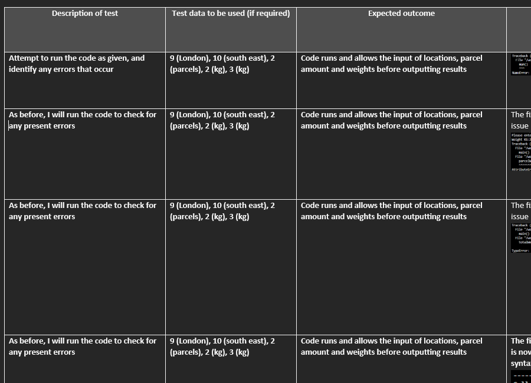
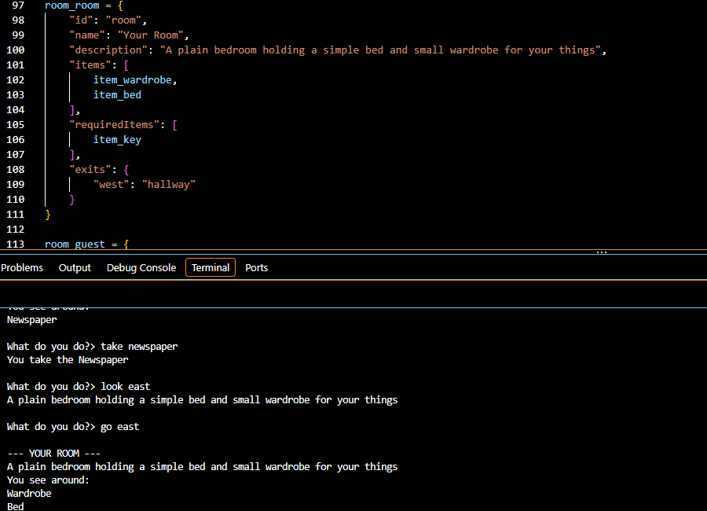
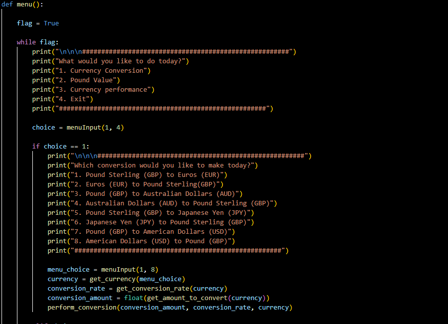
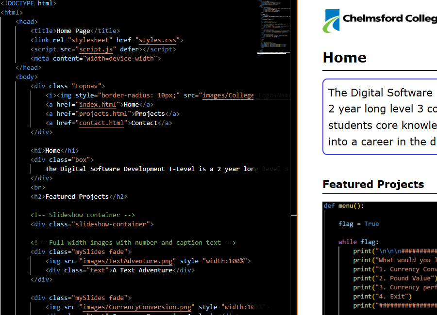
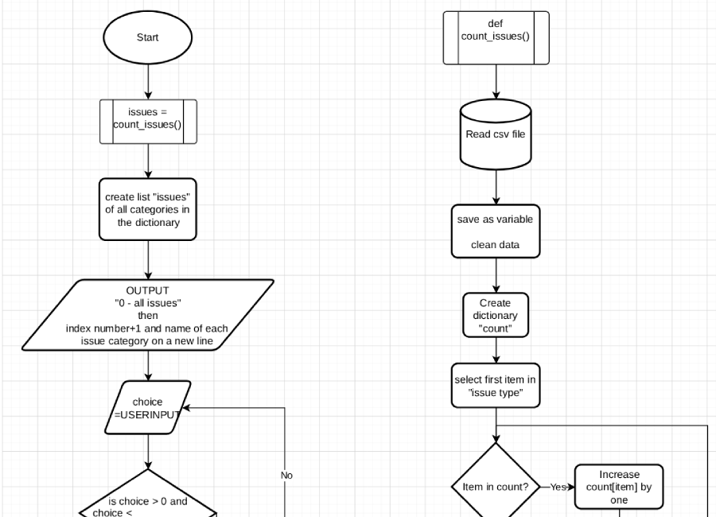

Home
Projects
Contact
Projects

Bug Testing
Bug testing broken code is an important part of the course, as it shows that students can read and understand code other than their own

A Text Adventure
We created a simple text adventure to learn how json can be used to store and retrieve information

Currency Conversion Analysis
Learning how to develop code when given a brief is an important part of the ESP portion of the course

This Website!
As a part of the second year's content, we are learning how to create a functioning website for the Occupational Specialism project

Flowcharts
Flowcharts are an important part of planning a piece of software, as they allow the algorithm to be laid out simply before development begins
 Home
Projects
Contact
Home
Projects
Contact